The feel
Everything is soft and slightly out of focus. Most N64 games drew a 320 by 240 picture, and the console's video filters smoothed it on the way to the television, which is why they look blurry.1 Their textures were tiny and stretched wide, and those huge, blurry texels are the cornerstone of the look.2 Colour painted into the vertices does the rest: bright, saturated colour to make the important places stand out, and dark shadows to imply more detail than there is.3
The dream comes from the limits: the maker of Cavern of Dreams credits them with those games' magical feeling of adventure, because low-fidelity graphics make you use your imagination.4 Fog hides the far edge of the world,5 and at its best it worked almost like a poetic form, containing the action.6 Few characters share the space, because the console struggled to show many at once.7 Cavern of Dreams itself grew from its maker's childhood dreams of leaving a level's geometry and wandering into uncharted territory.3
- soft
- wide open
- lonely in a nice way
- primary colours
- morning haze
- first time
Where it comes from
Nintendo co-designed the Nintendo 64 with Silicon Graphics, whose Reality Co-Processor draws the picture, and released it in Japan on 23 June 1996.1 Super Mario 64 was its lead-off title, developed while the hardware itself was still being made, and its team shaped each course like a clay diorama, changing it as they moved Mario around in it.8 Ideas passed back and forth between Mario and Zelda, whose Ocarina of Time followed in 1998,8,1 and indie platformers such as Cavern of Dreams now set out to capture how exploring those games felt.4
Core elements
Small, blurry textures
The texture unit works from just 4 KB of texture memory, too little for high-resolution textures,1 so a 16-bit texture could be at most 64 by 32 texels at a time.9 Bilinear filtering smooths them as they stretch, using three samples instead of four,1 and the huge, blurry texels that result are the cornerstone of the look.2
Vertex colouring
Where textures ran short, colour took over: Super Mario 64 is the notable case of solid colours with Gouraud shading.1 Rare's platformers painted light and shadow into the level geometry, with bright, saturated colour to make important areas stand out and dark shadows to imply more detail than there is.3
Fog at the far plane
Nintendo's manual gives fog one main job: fading objects into a fog colour so they don't pop in and out of view at the far clipping plane.5 Games gave it character: Banjo-Kazooie changed the fog's colour to suit each level, and in Turok: Dinosaur Hunter enemies jump out of it as if from nowhere.6
Chunky low-poly models
Characters run to a few hundred triangles: 704 for Link in Ocarina of Time and 516 for Kirby in Kirby 64.1 Models are simple and built from detached parts,4 and the look calls for smooth shading rather than flat facets.2
Large, sparse worlds
The console struggled to show many characters at once, so Kokiri Forest shows each villager's fairy first and the villager only when you come close.7 Hyrule Field was made vast so Link could ride a horse across it, then given a hole or an enemy wherever it felt empty.10 Super Mario 64 was designed for players who would rather explore outside the castle than head straight in.8
Billboards and other shortcuts
Some of Super Mario 64's characters are flat sprites on quads, to save polygons.1 Navi is a ball of light with wings because a fairy shaped like a girl wasn't possible on the console,7 and the paintings ripple when Mario jumps through them, an effect its programmer credits to the N64's speed.8
How to do it
Render at low resolution
Render at 320 by 240, the most common choice on the console,2 and let the picture blur as it scales up, as the N64's video filters did.1 Draw the 3D at a lower resolution scale or into a small render texture, and scale it up with bilinear filtering, a weighted average of the four nearest texels that looks blurry when magnified.11,12 Hold the frame rate down too: Ocarina of Time's overworld ran at 20 frames a second.13
Keep textures tiny and filtered
The console's 4 KB of texture memory holds a 16-bit texture of at most 64 by 32 texels.9 Cavern of Dreams uses textures from 64 by 64 down to 16 by 16, filtered so they never look jaggy.3 For the console's own three-sample blur,1 use a 3-point filter shader and switch off the texture's normal filtering, or it will show artefacts.14
Light with vertex colours
Keep lighting as basic as you can get away with: white ambient light, and vertex colours on the geometry to fake the rest.2 Paint bright, saturated colour onto the areas that matter and dark shadows where you want to imply detail,3 instead of using real-time lights.4 Characters can skip textures entirely and use flat colours.3
Model in low-poly parts
Keep a main character to a few hundred triangles: Link has 704 and Kirby 516.1 A whole world can stay in the thousands; the largest in Cavern of Dreams is about 7,500.3 Build models from simple, detached parts, put detail into textures rather than geometry,4 and prefer smooth shading to flat.2
Add distance fog
On the N64, fog is placed on a scale from 0 at the near plane to 1000 at the far plane.5 Set its end to 1000 so things are fully fogged by the time they reach the far plane; Nintendo's example starts it at 500.5 Choose a fog colour for each level's mood, like Banjo-Kazooie's blue sea mist on Treasure Trove Cove and white snowstorms on Freezeezy Peak.6
Use sprites and particles
Draw minor characters as sprites on flat quads to save polygons,1 and reach for billboard sprites and shiny, chrome-like metal, both part of the N64 look.2 Add plenty of sparkly particles, since N64 games loved sparkles,4 and prefer additive blending to transparent blending.2
Cheat sheet
- Resolution
- 320 x 240, softened by the video filters1
- Frame rate
- 20 fps, like Ocarina of Time's overworld13
- Texture memory
- 4 KB: at most 64 x 32 texels at 16-bit9
- Lighting
- White ambient light plus vertex colours2
- Colour
- Bright and saturated, with dark painted shadows3
- Fog
- Starts at 500, full at 1000, on a near-to-far scale of 0 to 10005
Do
- Keep textures as low resolution as you can, and let them blur.2
- Mark the important places with bright, saturated colour.3
- Turn a limit into a feature. When Kokiri Forest couldn't show every villager, it showed their fairies.7
- Leave room to wander. Super Mario 64 was made for the players who explore outside the castle first.8
- Give each level its own fog colour.6
Avoid
- Modern lighting. It very easily breaks the illusion of early 3D.2
- PlayStation tells: blocky, unfiltered texels and warping textures. The PS1 had no texture filter and no perspective correction,15 while the N64 had both.1
- Modelling detail that a texture could carry.4
- Pushing the draw distance out. Turok's 2015 remaster could see further and lost the original's scares.6
Tools and tutorials
- godot-n64-shader-demo
Open-source Godot materials that recreate the N64's quirks, including 3-point filtering, with tips for the look.2
- N64 3-point filtering
A small port of GLideN64's 3-point filter to Godot. Turn the texture's own filtering off.14
- Fast64
Materials and export for real N64 projects, also useful for studying the render modes.
- N64brew
Homebrew documentation for the console's hardware and tools.
Palette
Sampled from Super Mario 64, Ocarina of Time, Banjo-Kazooie and Majora's Mask. The strip above blends the same eight colours across triangles, as the console's Gouraud shading did.1
Feel the vibe
Listen
A warm, slightly jazzy tune for the castle, where Mario jumps through rippling paintings.8
YouTubeElectric piano and a slow, rolling pulse. Study how little it needs to feel dreamlike.
YouTubeA short, woody loop for the first village, where each villager's fairy shows before they do.7
YouTubeFlamenco-style guitar. Listen for how few instruments carry it.
YouTubeOfficial upload. Tuba, banjo and pure good mood.
YouTubeThe score for a platformer made to capture playing N64 games as a child.4
YouTube
More references
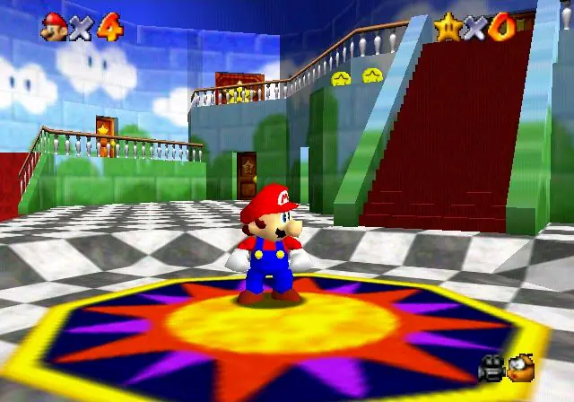
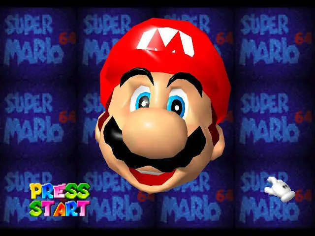
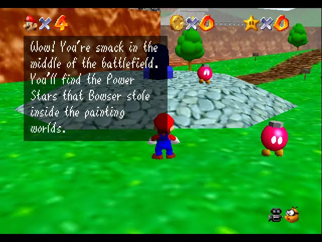
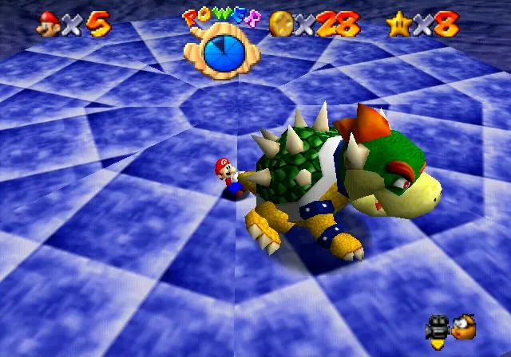
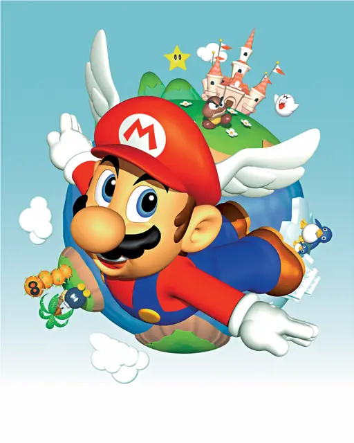
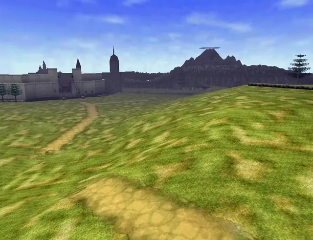
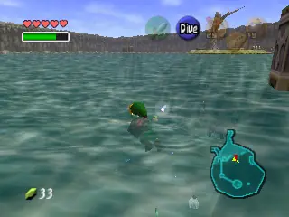
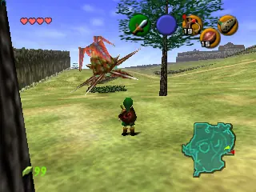
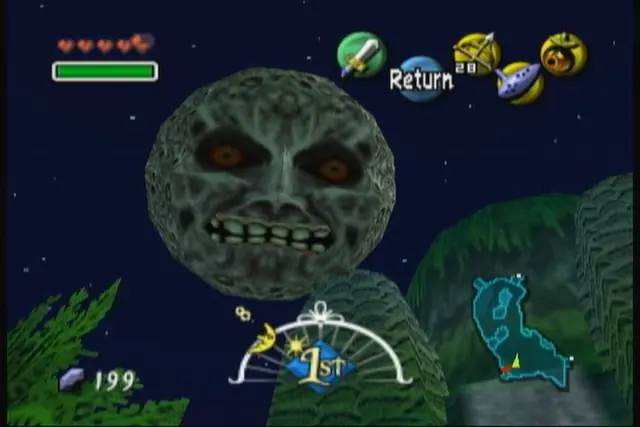
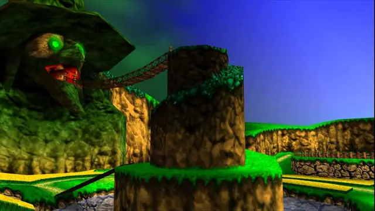
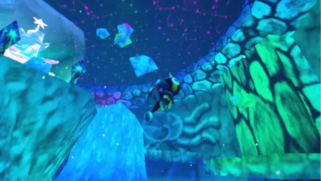
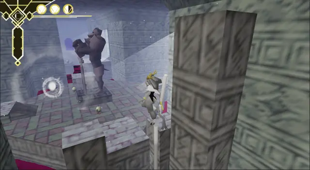
Games
- Super Mario 64
Study the camera and the free, analogue movement the whole game was built around.8
- The Legend of Zelda: Ocarina of Time
Hyrule Field was made vast for riding a horse, then given something to find wherever it felt empty.10
- Banjo-Kazooie
Bold, saturated vertex colour, and fog that changes colour with each world.3,6
- The Legend of Zelda: Majora's Mask
Study how the look turns uneasy as the colours darken.
- Turok: Dinosaur Hunter
Enemies leap out of thick fog. The 2015 remaster's longer draw distance made it far less frightening.6
- Mario Kart 64
Study how the racers and the trackside billboards are drawn.
- Cavern of Dreams
Made to capture playing N64 games as a child, with vertex colouring instead of real-time lighting.4
- Pseudoregalia
Study the blurred stone textures and the fast, acrobatic movement.
Film, art and more
- Nintendo 64
The console: a Reality Co-Processor designed by SGI, and only 4 KB of texture memory.1
- ReBoot
A visual parallel: chunky, shiny computer animation from the same years.
- Toy Story
A visual parallel: rounded, toy-like computer animation from the same years.
- Silicon Graphics
Co-designed the console with Nintendo and designed its graphics chip, the Reality Co-Processor.1
Sources
- 1Nintendo 64 Architecture: A Practical Analysis
- 2Godot N64 Style Demo
- 3Excavating the Cavern of Dreams with Bynine Studio
- 4When We Made… Cavern of Dreams
- 5gSPFogPosition
- 6In Praise of Video Gaming’s Old Dalliance with Distance Fog
- 7Iwata Asks: The Legend of Zelda: Ocarina of Time 3D, Original Development Staff Part 1: Where the Name Navi Came From
- 8Super Mario 64 – 1996 Developer Interviews
- 9N64 Tutorial, Graphics, Chapter 3: Simple Texture Mapping
- 10Iwata Asks: The Legend of Zelda: Ocarina of Time 3D, Original Development Staff Part 2: Making the Fields
- 11Resolution scaling
- 12Render Texture Inspector window reference
- 13Let’s Check Out Ocarina Of Time’s PC ‘Port’
- 143-point texture filtering
- 15PlayStation Architecture: A Practical Analysis